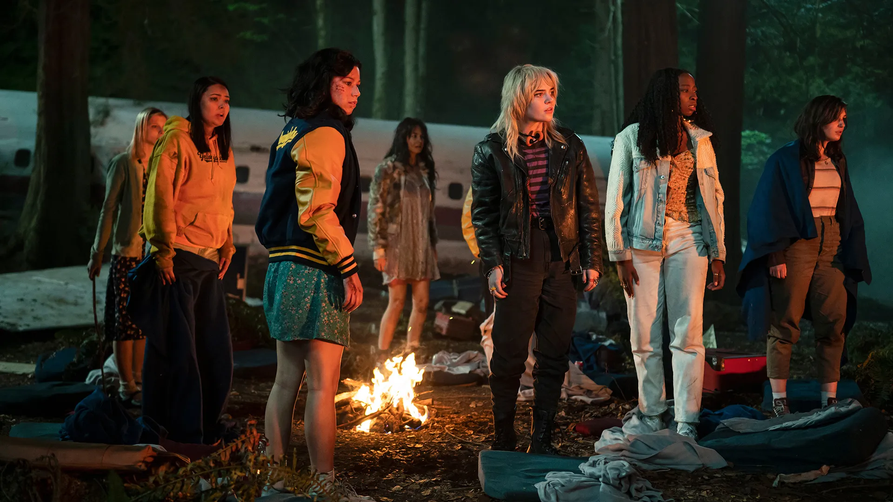
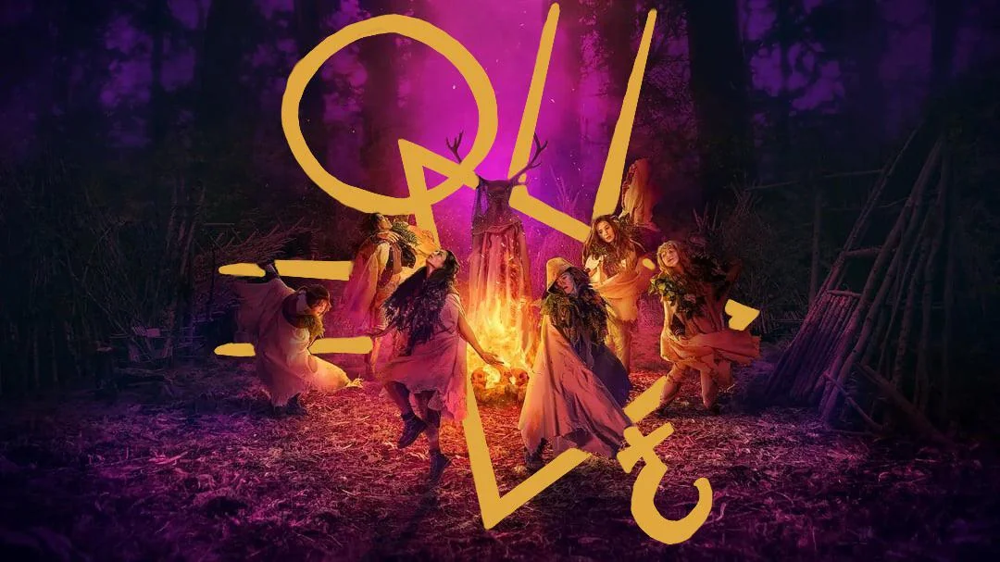

A Gripping Story of Survival
Yellowjackets is a psychological horror-drama series that follows a high school girls' soccer team whose plane crashes deep in the remote wilderness. Stranded with no immediate rescue, the team must band together to survive against the harsh elements, dwindling resources, and the slow unraveling of their own morality. As tensions rise, friendships fracture, and primal instincts begin to take over, leading to unthinkable choices. The series follows two timelines—one chronicling their struggle in the wild and another set 25 years later, where the survivors are haunted by their past. As the present-day women try to move on, secrets resurface, forcing them to confront what they did to survive. The story blurs the line between psychological trauma and the supernatural, leaving audiences questioning what is real. With each episode, Yellowjackets deepens the mystery, revealing new horrors both in the past and present.
A Blend of Mystery and Horror
The show expertly weaves together elements of survival drama, psychological horror, and eerie supernatural undertones. At first, the girls attempt to maintain a sense of order, clinging to the hope of rescue, but as weeks turn into months, desperation sets in. The isolation and fear begin to manifest in disturbing ways, leading to power struggles, betrayals, and violent acts. In the present timeline, the survivors are forced to reckon with their past as an unknown force threatens to expose their long-buried secrets. The show keeps viewers on edge with its nonlinear storytelling, using flashbacks and eerie foreshadowing to piece together the mystery. Themes of trauma, paranoia, and the human capacity for darkness are explored with chilling intensity. Whether the supernatural plays a role or not remains one of the show’s most debated aspects, adding to its unsettling atmosphere.
Main Themes Explored
Yellowjackets is more than just a survival thriller—it’s a deep exploration of trauma, power, and the loss of innocence. The series examines how extreme circumstances can strip away humanity, forcing individuals to make impossible choices. It also highlights the psychological effects of long-term trauma, showing how the past continues to shape the present. Power dynamics among the survivors play a crucial role, as some take control while others fall into submission. The show also tackles issues of identity, peer pressure, and the blurred lines between reality and delusion. It masterfully keeps audiences engaged by offering just enough information to fuel theories while withholding key details. This combination of suspense, psychological depth, and shocking twists makes Yellowjackets a standout in modern television.
Key Elements of Yellowjackets
- Psychological horror and suspense
- Flashbacks revealing past and present connections
- Complex female-led ensemble cast
- Themes of trauma, survival, and secrets
- Unpredictable plot twists and shocking moments